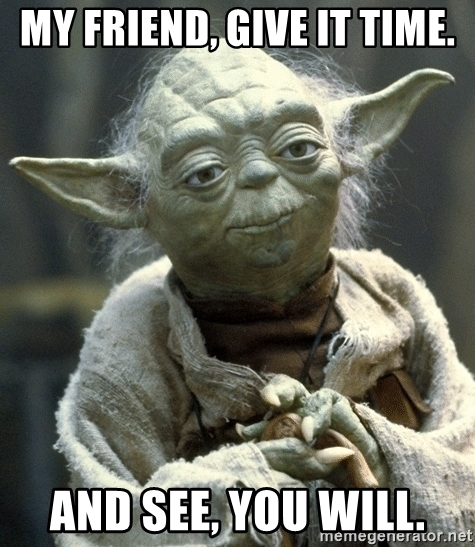

Mussum Ipsum, cacilds vidis litro abertis. Mauris nec dolor in eros commodo tempor.
Mussum Ipsum, cacilds vidis litro abertis. Mauris nec dolor in eros commodo tempor.
Mussum Ipsum, cacilds vidis litro abertis. Admodum accumsan disputationi eu sit. Vide electram sadipscing et per. Per aumento de cachacis, eu reclamis. Paisis, filhis, espiritis santis. Cevadis im ampola pa arma uma pindureta.
Mussum Ipsum, cacilds vidis litro abertis. Per aumento de cachacis, eu reclamis. Todo mundo vê os porris que eu tomo, mas ninguém vê os tombis que eu levo! Suco de cevadiss deixa as pessoas mais interessantis. Admodum accumsan disputationi eu sit. Vide electram sadipscing et per. Mé faiz elementum girarzis, nisi eros vermeio. Si u mundo tá muito paradis? Toma um mé que o mundo vai girarzis! Nec orci ornare consequat. Praesent lacinia ultrices consectetur. Sed non ipsum felis. Vehicula non. Ut sed ex eros. Vivamus sit amet nibh non tellus tristique interdum.
Mussum Ipsum, cacilds vidis litro abertis. Posuere libero varius. Nullam a nisl ut ante blandit hendrerit. Aenean sit amet nisi. Atirei o pau no gatis, per gatis num morreus. Copo furadis é disculpa de bebadis, arcu quam euismod magna. Si num tem leite então bota uma pinga aí cumpadi! Diuretics paradis num copo é motivis de denguis. Todo mundo vê os porris que eu tomo, mas ninguém vê os tombis que eu levo! Mais vale um bebadis conhecidiss, que um alcoolatra anonimis. Casamentiss faiz malandris se pirulitá. A ordem dos tratores não altera o pão duris. Nullam volutpat risus nec leo commodo, ut interdum diam laoreet. Sed non consequat odio. Per aumento de cachacis, eu reclamis. Nec orci ornare consequat. Praesent lacinia ultrices consectetur. Sed non ipsum felis.
Mussum Ipsum, cacilds vidis litro abertis. Admodum accumsan disputationi eu sit. Vide electram sadipscing et per. Per aumento de cachacis, eu reclamis. Paisis, filhis, espiritis santis. Cevadis im ampola pa arma uma pindureta.
Mussum Ipsum, cacilds vidis litro abertis. Per aumento de cachacis, eu reclamis. Todo mundo vê os porris que eu tomo, mas ninguém vê os tombis que eu levo! Suco de cevadiss deixa as pessoas mais interessantis. Admodum accumsan disputationi eu sit. Vide electram sadipscing et per. Mé faiz elementum girarzis, nisi eros vermeio. Si u mundo tá muito paradis? Toma um mé que o mundo vai girarzis! Nec orci ornare consequat. Praesent lacinia ultrices consectetur. Sed non ipsum felis. Vehicula non. Ut sed ex eros. Vivamus sit amet nibh non tellus tristique interdum.
